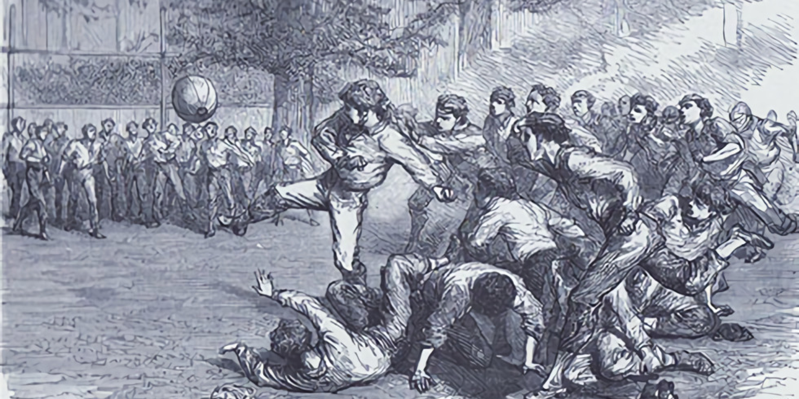

История возникновения и развития футбола
Точной даты возникновения футбола не известно, но можно с уверенностью сказать, что история футбола насчитывает не одно столетие и затронула немало стран. Игры с мячом были популярны на всех континентах, об этом говорят повсеместные находки археологов
В Древнем Китае существовала игра, известная как «Цуцзюй», упоминания о которой были датированы вторым веком до нашей эры. По заявлению ФИФА в 2004 году, именно она считается наиболее древней из предшественников современного футбола
Родиной современного футбола официально признают Великобританию. В средние века это была очень агрессивная игра. Мяч отбивали ногами и руками, бросались толпой на овладевшего им противника. Иногда развлечение заканчивалось переломами и другими серьезными травмами. В 1314 году жителям Лондона был зачитан королевский указ Эдуарда II, под страхом тюремного заключения запрещающий игру в городе.
Первые официальные правила игры в футбол были введены 7 декабря 1863 года Футбольной ассоциацией Англии.
Зарождение современного футбола
Сдержанные англичане адаптировали кальчо к собственному темпераменту и в XIX веке футбол обрел в Англии такую популярность, что потеснил с пьедестала крикет. В 57-году был создан знаменитый «Шеффилд» – клуб являющийся старейшим из существующих, а через шесть лет Футбольная Ассоциация Англии, в которую вошли 11 клубов и команд. Были приняты правила, стандартизированы размеры поля и ворот. В 71 году XIX века был учрежден первый футбольный турнир – Кубок Англии, являющийся на данный момент старейшим в мире.
Появление профессионального футбола
К концу века количество английских клубов перевалило за сотню. Изначально игра должна была оставаться сугубо любительской, поэтому игроков, бравших плату за свою игру, с позором изгоняли из Ассоциации. Так случилось со знаменитой командой престонского футбольного клуба в 1884 году, когда выяснилось, что ее игроки получают зарплату. Однако уже через год Ассоциация официально разрешила платить футболистам, что стало ключевой точкой для зарождения профессионального футбола и появления первой Футбольной лиги.

Распространение футбола
Игра захватила не только Англию. Со стремительностью лавины она начала распространяться по миру и 30 ноября 1872 года состоялся первый международный матч между сборными Англии и Шотландии. Игра быстро перестал быть сугубо английской. В 1904 году в Париже была создана Международная федерация футбола (ФИФА). Она по сей день является главным управляющим органом, организующим международные турниры, в том числе по пляжному и мини-футболу.
Закрепление материала небольшой викториной

Родина современного футбола?
 Великобританию
Великобританию
Какой клуб является старейшим из существующих?
Шеффилд
В каком году состоялся первый международный матч?
В 1872 года между сборными Англии и Шотландии